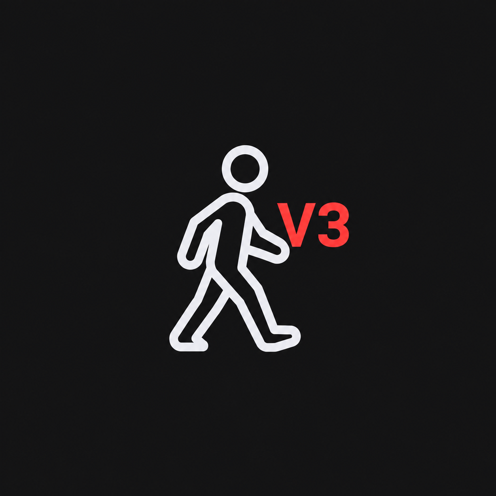

LongwalkV3 Crosscheck

This is step 1: before your data can be processed, your raw recordings need to be converted into BIDS and crosschecked. This page is for anyone using the LongwalkV3 Crosscheck tool to do that — no coding background needed. If you haven't already, read Crosschecking first — it covers what crosschecking means and why it matters in general; this page picks up from there with what's specific to LongwalkV3 and the actual walkthrough.
The raw folder is never changed — not once, not ever
Worth repeating here: nothing on this page ever writes to, renames, or deletes anything in your raw folder. See Crosschecking for the full explanation of why that's safe.
Why LongwalkV3 is different from Crane/FOH crosscheck
If you've used Crane Crosscheck or FOH Crosscheck before, there's one important difference: those tools expect exactly one recording per subject per file type, so finding two counts as a problem — a duplicate you have to resolve by picking the real one and discarding the rest.
LongwalkV3 doesn't work that way. A participant can do up to 3 real sessions (separate real-world days), and within a session there can be several real events files — one per city/run combination. Finding several physiology recordings or several events files for one subject is completely normal, not a duplicate. So this tool treats every physiology and events file it finds as legitimate and shows you all of them side by side — there's no "pick the right one, delete the others" step here the way there is for Crane or FOH.
This means the tool can't catch an accidental raw duplicate on its own
Because every matching file is treated as legitimate, if a session genuinely got exported twice by mistake, the tool won't flag it as a problem the way it would for Crane/FOH — it'll just show up as one more normal-looking recording. If you suspect that's happened for a subject, use "Fix Filenames in Raw Folder" (below) or Reveal to look at the raw files yourself before running Refresh BIDS.
How to do a crosscheck
Not sure what a button or icon does?
Hover your cursor over any icon or button in the tool — a short tooltip explains what it does before you click it.
1. Open the tool
With the toolbox installed (see Getting Started if you haven't done this yet), click LongwalkV3 BIDS Crosscheck in the VR Lab Toolbox launcher (desktop shortcut), or open a terminal and type:
vrlab_longwalk3_bids_crosscheck
The tool remembers the last BIDS folder you had open, so after your first time using it, it'll usually open straight to where you left off.
2. Point it at your raw folder and import
Click Browse... next to Raw Folder and select the folder your raw LongwalkV3 recordings actually land in, then click Refresh BIDS. This copies every subject not already in your BIDS folder across; subjects already imported are never re-copied, overwritten, or even looked at again, so a crosscheck decision you've already made can never be clobbered by re-running this. Nothing in the raw folder is ever changed or deleted by this step. Safe to click any time, including repeatedly.
Reveal next to the raw folder opens it in your system's file browser (Explorer on Windows, Finder on macOS) — handy if you want to look at what's actually in there yourself.
Debrief data from REDCap
Each subject's debrief comes from REDCap, and you can get it in one of two ways:
- Pull it (recommended). Click Setup REDCap once for your Study ID
and enter the REDCap project details. After that, every Refresh BIDS
pulls the latest data first and saves it into the raw folder as
redcap_<study>_longwalkv3.csv. If REDCap can't be reached, the last pulled file is used instead. Pull REDCap Data fetches it without converting anything. - Use a manual export. A REDCap export saved into the raw folder
(
<Project>_DATA_<date>_<time>.csv) is picked up automatically when there's no pulled file. You can also choose any csv with the Debrief Data picker.
The Debrief Data panel always shows which file will be used. A subject that's already in BIDS without a debrief gets one added on the next Refresh BIDS, once REDCap has their row. Nothing else about that subject changes.
Setting up REDCap the first time
Setup REDCap asks for three things. The URL is already filled in; the other two come from your REDCap project.
Report ID — the number of a saved report in your REDCap project. The pull downloads exactly what that report contains. REDCap's two built-in reports ("A: All data" and "B: Selected instruments") have no Report ID, so you need to make your own:
- In the REDCap project, open Data Exports, Reports, and Stats in the left menu and click + Create New Report.
- Name it something the lab will recognise as belonging to the crosscheck
(e.g.
Longwalk data for crosscheck), so nobody edits or deletes it by accident. - Under Fields to include, add
study_idfirst — it's how each debrief row is matched to a subject — then the debrief fields. The "add all fields from instrument" dropdown is the quickest way. - Leave the filters empty so every record is included.
- Under Additional report options: tick Include the survey identifier and survey timestamp fields (records when the debrief was done), leave Combine checkbox options unticked (keeps one 0/1 column per option), and keep Remove line breaks ticked (a line break inside a free-text answer can split a row in two). The two display dropdowns only affect REDCap's own screen, not the pull.
- Save. Back in My Reports & Exports, copy the number from the
Report ID column (e.g.
15195) — not the "Unique report name" next to it. The crosscheck can only find a report by this number, not by its name.
API token — a long code that lets the crosscheck read this one project as you. To get one:
- Your REDCap user needs API Export rights on the project (project owner: User Rights → your user → tick API Export).
- Click API in the project's left menu and request a token. Depending on your REDCap install, an administrator may need to approve it first.
- Once issued, copy the token from that same API page.
The token is personal and gives access to the project's data, so treat it like a password. The crosscheck stores it in your operating system's credential store, never in a file in the BIDS or raw folder. Tokens are per project: one from a different REDCap project won't be able to see this report.
After saving, click Pull REDCap Data and check the csv that appears in
the raw folder: it should have a study_id column whose values match the
subject ids in your filenames (e.g. dummy01). Values are exported raw, so
multiple-choice answers arrive as codes (1, 2, …) — REDCap's codebook
says what each code means.
Every raw physiology (.acq) or behaviour/actor-log (.csv) file's
subject id is normally read straight from its filename. Occasionally that
fails outright, or it succeeds but lands on the wrong id. Click "Fix
Filenames in Raw Folder" to see every raw file of either kind in one
table, with a "Currently resolves to" column showing the subject id
it currently maps to (or "(unparseable)", in red, if it doesn't
resolve at all). Click a row to see, in the details pane below the table,
plain-English reasoning for why it failed (or what it resolves to if it
didn't), plus any matching line from the last time you ran Refresh
BIDS. Type the correct subject id into "Corrected subject id" for
any row that's wrong, then click Save. This never renames the raw
file itself — only what the next Refresh BIDS run resolves that
filename to.
3. Point it at your BIDS folder
If nothing loads automatically, click Browse... in the BIDS Folder panel and select your LongwalkV3 BIDS folder — the destination folder from step 2 above, not the raw one. This is the folder every step from here on actually works with. Reveal opens it in your system's file browser, same as the raw folder's.
Study ID is a short label for this study, saved inside the BIDS folder and remembered next time you open it — it's what names your saved crosscheck data (see Backing up below), so a backup stays identifiable. Pick an existing one from the dropdown if you're pointing the tool at a different copy of a study you've already worked on.
4. Read the subject list
The BIDS folder summary panel gives you the folder's overall state at a glance — total subject count, how many physiology/events/debrief files were found — and, in bold red, how many subjects still need crosschecking (i.e. haven't been marked ☑). That count disappears once everyone's been reviewed.
The left-hand panel lists every subject, with a small icon (or icons) next to each one telling you, at a glance, whether it needs your attention. There's one icon per file type, in the order physiology, events, debrief, then an optional ⚑ for the subject as a whole:
| Icon | Meaning |
|---|---|
| ● | Fine — one or more files found (normal for LongwalkV3, see above), nothing missing. |
| ○ | Missing — no file found at all for this scan type. |
| ☑ | You've personally reviewed and approved this one. |
| ❗ | A file has a problem — see What gets checked below. Hover it in the detail panel for the exact reason. |
| ⚑ | A problem with the subject's sessions as a whole, not one file — e.g. a session with no physiology, or two cities in one session. The Overview at the top of the detail panel spells it out. |
No ⚠ (duplicate) or 🏷 (needs tagging) icons here
You won't see either of these for LongwalkV3. ⚠ doesn't apply because this tool never treats multiple physiology/events files as a duplicate needing a pick (see above). 🏷 doesn't apply either — LongwalkV3's raw-to-BIDS step already writes real BIDS filenames itself, so there's no separate tagging step the way FOH has.
Tick Issues only above the list to hide every subject that's already fine, so you only see the ones missing data or flagged with ❗ or ⚑.
What gets checked
Each physiology .acq file (only the file's header is read, so this
is quick even for long recordings):
- It opens as a real AcqKnowledge file.
- It has an EDA channel, and that channel isn't empty. EDA is the only signal LongwalkV3 processes, so ECG/Trigger are listed but not required.
- It's at least 5 minutes long. Anything shorter is probably an aborted or truncated recording.
Each events file:
- It opens, and has at least one row (not just a header).
- It has an
onsetcolumn, and every onset is a number. Missing onsets are shown in red; after a Refresh BIDS with the current version there should be none or almost none. See Rows without an onset in step 6 if some remain. - Its city (the
acq-cityNpart of the filename) is one of city1, city2 or city3.
The debrief files: one REDCap debrief per session (REDCap stores one row per subject per session). Each opens and has at least one row. A subject without any shows ○ in the debrief column.
Each subject's sessions as a whole (⚑):
- Every session has exactly one physiology recording and at least one events file.
- Every session has exactly one city. Each participant walks the cities in their own random order, so any city can turn up in any session. Two cities in one session usually means the wrong city was started by mistake and then restarted. Tick the wrong run under events and click Remove (see step 6).
- No city is walked in more than one session.
- No more than 3 sessions.
- Every recorded session has its REDCap debrief, and no debrief belongs to a session that wasn't recorded.
How sessions are numbered: by date. All of a subject's raw files are
found wherever they sit in the raw folder, and each calendar day becomes
a session — the earliest is ses-01. How the raw session folders are
named (ses-01, ses_01, ...) doesn't matter. Within a session, runs
are numbered by time.
Fewer than 3 sessions is not flagged. A participant who hasn't done all their sessions yet is normal, so the Overview just shows the missing ones as "not recorded yet".
5. Click a subject to see its details
The right-hand panel shows full detail for whichever subject is selected on the left. At the top, an Overview box shows how many of the 3 planned sessions were found, which city and how long a physiology recording each session has, whether the debrief is there, and any ⚑ session-level problems in red. Below that you'll see every physiology, events and debrief file found for them, each listed with its own info and individually correctable (see step 6). You can also select more than one subject at once (Ctrl-click or Shift-click) for the bulk actions in Working with several subjects at once below.
The Physiology panel lists one row per .acq file found — normally
one per real session — showing its session, length and a ✓/✗ for the
EDA checks above. The details under it list the sample rate and every
channel in the recording.
The Events panel lists one row per events file found — one per session/city/run. Each row shows its session, city, row count and a ✓/✗ for the events checks above. Hover the ✓/✗ for the exact reason.
The Debrief panel shows the subject's REDCap debrief file, if there is one.
6. Remove a wrong session or run, or fix a wrong date
Remove a whole session: in the Overview, tick the session and
click the Remove button next to it. Its physiology, events and
debrief are removed from BIDS (the raw folder is never touched), and the
remaining sessions are renumbered by date — remove ses-01 and the old
ses-02 becomes ses-01.
Remove one run or recording: in the physiology or events panel, tick the file and click Remove next to it — e.g. an aborted run that was restarted, or a wrong city started by mistake. The remaining runs in that session are renumbered by time.
Every removal asks you to confirm first, and is recorded so it can be replayed if BIDS ever needs rebuilding. To bring a removed file back, use Restore from raw... (step 7).
Click "Reveal subject folder" next to any file to open that subject's folder — inside your BIDS folder, not the raw one — in your system's file browser.
Fix a wrong date: if a file's recorded date is wrong, click
"Correct date..." next to it and type the right one — this rewrites
the date in that session's scans.tsv (see step 8), not the filename.
A recording with a wrong date usually shows up as a session of its own
(physiology, no events). After correcting it, click Sort sessions &
runs by date in Subject Actions to put it back in the right session.
Fix REDCap IDs, or leave a REDCap row out: click Fix Record IDs in
Debrief Data in the Debrief Data panel. Every REDCap row is listed
(one per subject per session). Type a corrected subject id where the
export's study_id is wrong, or tick Leave out to keep that row out
of BIDS. If a row's Session date is missing or wrong, type the right
date there: it's how each REDCap row is matched to a recorded session. Your fixes are saved in the BIDS folder and applied the next
time you click Refresh BIDS — the REDCap export itself is never
changed.
Need more room? Click ⤢ Focus on details (or press F11) to hide the folder and actions area at the top, so the subject list and the selected subject's details get the whole window height. Click it again to show everything.
Rows without an onset: the events details list where they come from (which actor, and what its raw timestamp looks like, e.g. "13 digits") and how many are on rows that send a Biopac trigger. Only those affect the processing: interval matching fills them in from their neighbours and marks the session corrected. The rest only lose their own timing.
Ambiguous timestamps: Unreal writes the seconds and milliseconds of
its timestamps without leading zeros (12:58:08.864 comes out as
...12588864), so some can be read more than one way (e.g.
...17303241 is 17:30:03.241 or 17:30:32.041). The subject summary shows, per run, how
many timestamps are missing and how many are ambiguous (and how many of
each are on trigger rows). Click a run's events file to see examples: the
raw cell and every possible reading, with the one used in bold.
Ambiguous trigger rows are settled against the Biopac trigger edges when
processing, so they don't affect the intervals.
You can also drag the divider between the subject list and the details.
7. Mark a subject as reviewed (optional)
Above the file details, the Subject Actions panel holds actions that apply to the whole subject: marking it reviewed, renaming its ID, re-reading its info from disk if a file has changed since the tool last looked (Refresh), undoing crosscheck bookkeeping (Restore from raw...), and removing it from BIDS entirely. It stays visible at a fixed spot regardless of what's selected — blank when nothing is selected, and titled with the subject's ID when exactly one is.
Click "Mark crosschecked" to record that you've personally looked at this subject and approved it — shown afterwards as a ☑ next to its name in the subject list. This is a manual note for your own or your team's reference; it doesn't change anything else. Click the same button again ("Un-mark crosschecked") to remove the mark.
- Sort sessions & runs by date — renumbers this subject's sessions by date and runs by time, e.g. after Correct date.... Shows the changes before doing anything.
- Rename subject ID... — corrects a wrong subject id, renaming the
sub-<id>folder and every file inside it to match. - Restore from raw... — clears this subject's crosscheck bookkeeping, so the next Refresh BIDS re-derives their whole record fresh from the raw folder. Any other decision already made for them (a corrected date, a crosschecked mark) goes with it and needs redoing too.
- Remove Subject Folder from BIDS... — deletes the subject's entire folder from BIDS (their raw recording is untouched) and asks for an optional reason first. This one has no in-app undo — your raw folder, untouched by this tool, is the only way back.
8. scans.tsv
Below the file details, the scans.tsv panel lists every scan this subject's BIDS bookkeeping currently knows about, with its recorded date. Edit date... next to any row lets you correct that scan's date directly, without needing to find its file in the panels above first.
9. Activity Log
A running record of everything the tool has done this session — what Refresh BIDS found, when auto-save last ran, and so on.
What about "Remove non-selected files from BIDS"?
You'll see this button near the top of the window, same as Crane/FOH Crosscheck — but for LongwalkV3 it will almost always stay disabled or show "0 picks." That's expected: this button commits a duplicate pick, and, as explained above, physiology and events files are never treated as duplicates here. Wrong sessions and runs are removed with their own tick-and-Remove buttons instead (step 6).
Working with several subjects at once
Select more than one subject in the list and Subject Actions switches to a Group Actions panel: bulk versions of the same buttons, scoped to your selection — Refresh, Mark selected crosschecked / Un-mark selected crosschecked, Restore selected from raw..., and Remove selected from BIDS....
Renaming a subject's ID stays single-subject only, on purpose — renaming several different subjects to the same new ID wouldn't make sense.
Backing up, and rebuilding after a lost BIDS folder
This is the payoff of the rule at the top of this page — the raw folder is never touched — spelled out concretely: everything in your BIDS folder is either raw data (already safe, and reproducible any time by re-running Refresh BIDS) or bookkeeping this tool writes as you work. Only that bookkeeping is unique and worth backing up on its own — use Save Crosscheck Data / Restore Saved Crosscheck Data in the General Actions panel, keyed automatically to this BIDS folder's Study ID. Save/Restore Crosscheck Data for LongwalkV3 also cover the raw-filename correction file from step 2 (Fix Filenames in Raw Folder) automatically, since a rebuild needs it in place before Refresh BIDS runs, not just the decisions made afterward.
Next: Process Your Data — step 2, once your data's the right files in the right place.
Also see: Crosschecking for what crosschecking means in general, Crane Crosscheck and FOH Crosscheck for the equivalent tools for other datasets, and BIDS Crosscheck: Architecture if you're looking to change how the tool works rather than just use it.